L'océan comme le corps humain, on en prend soin
 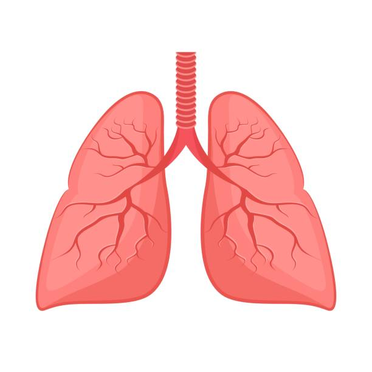
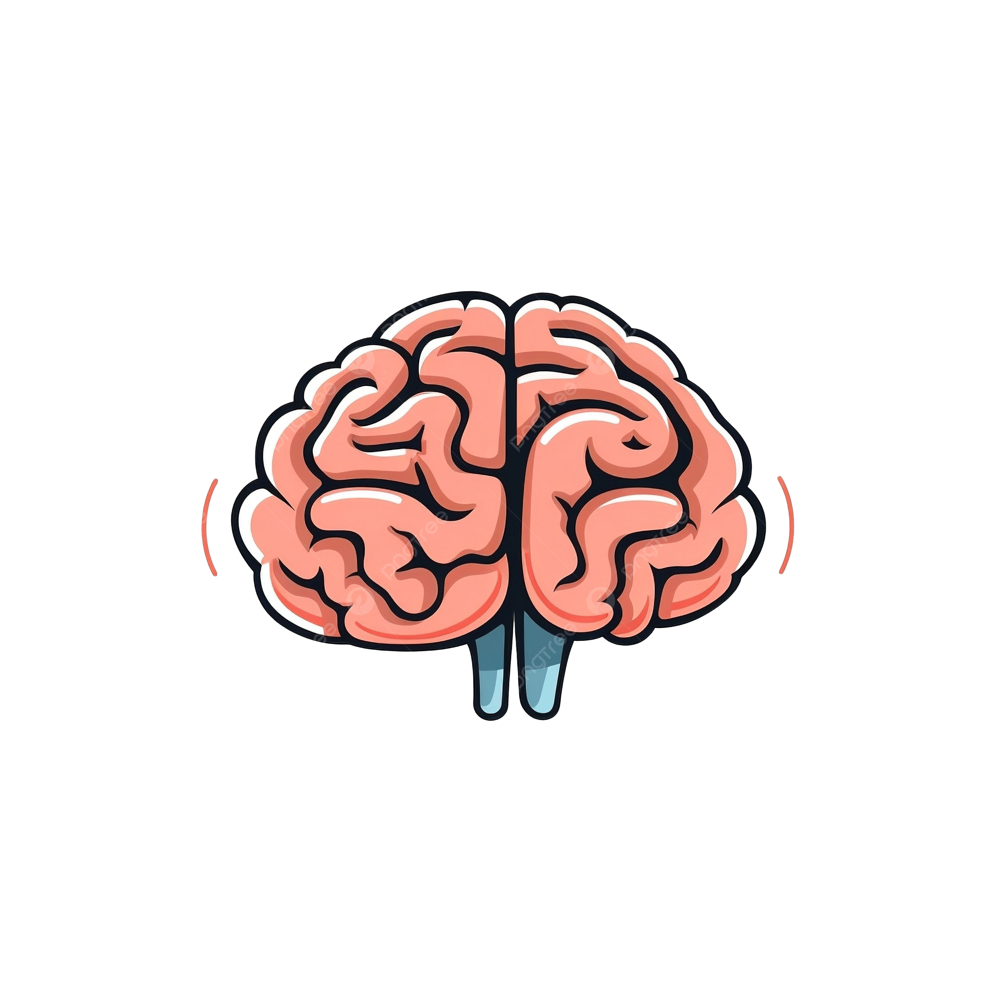
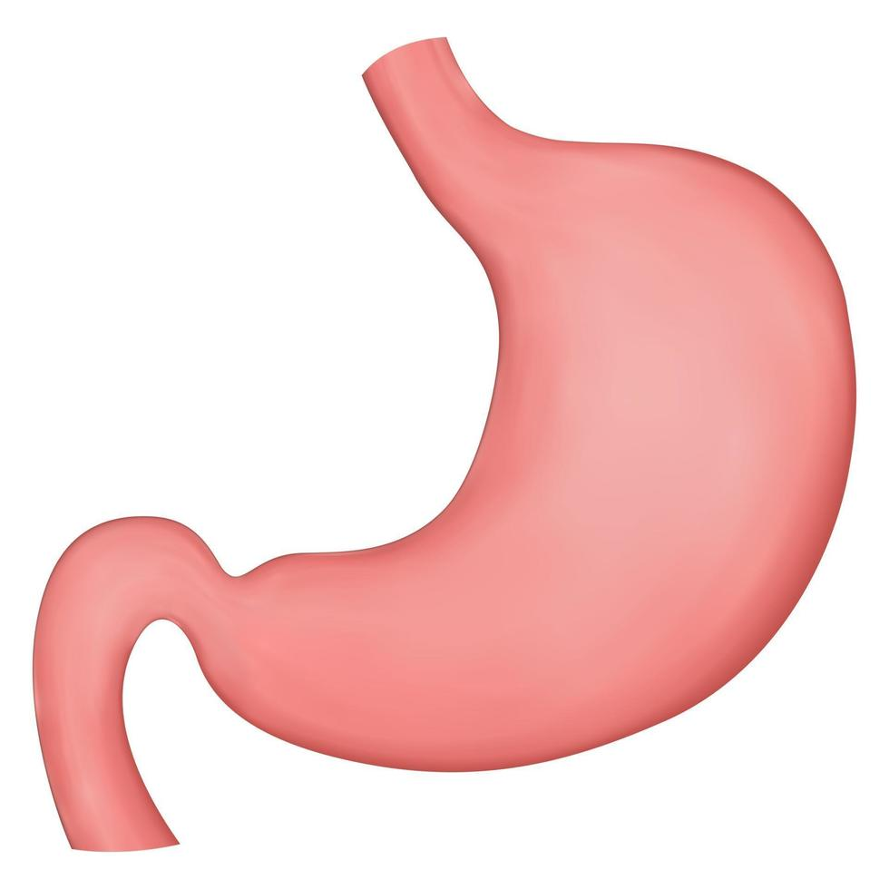
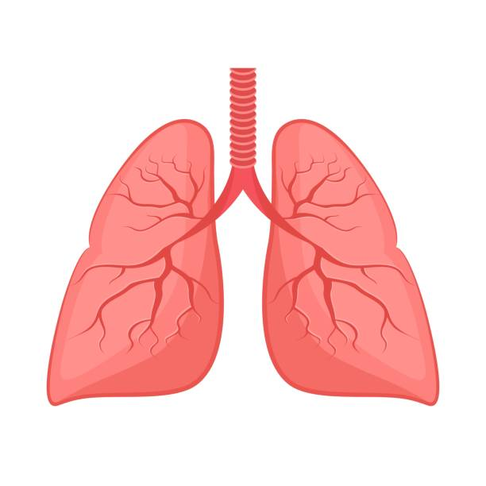
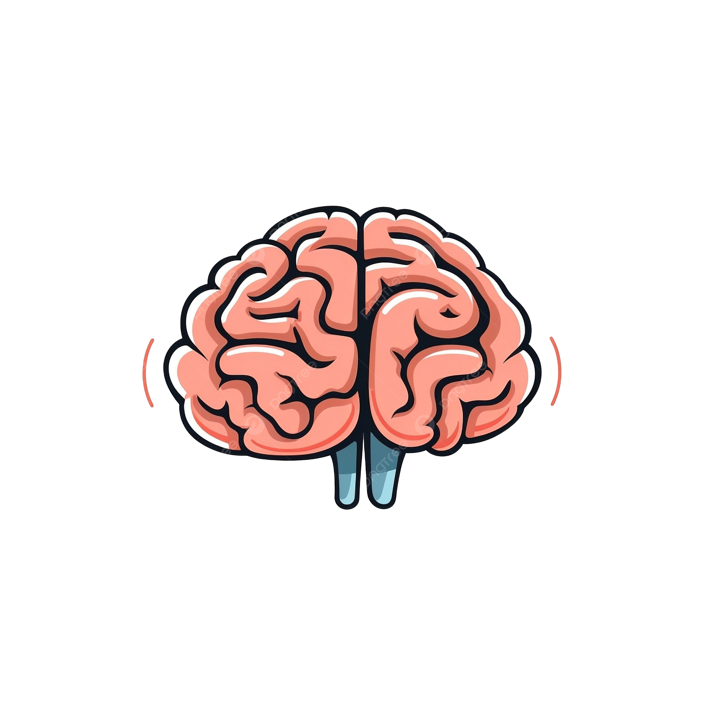
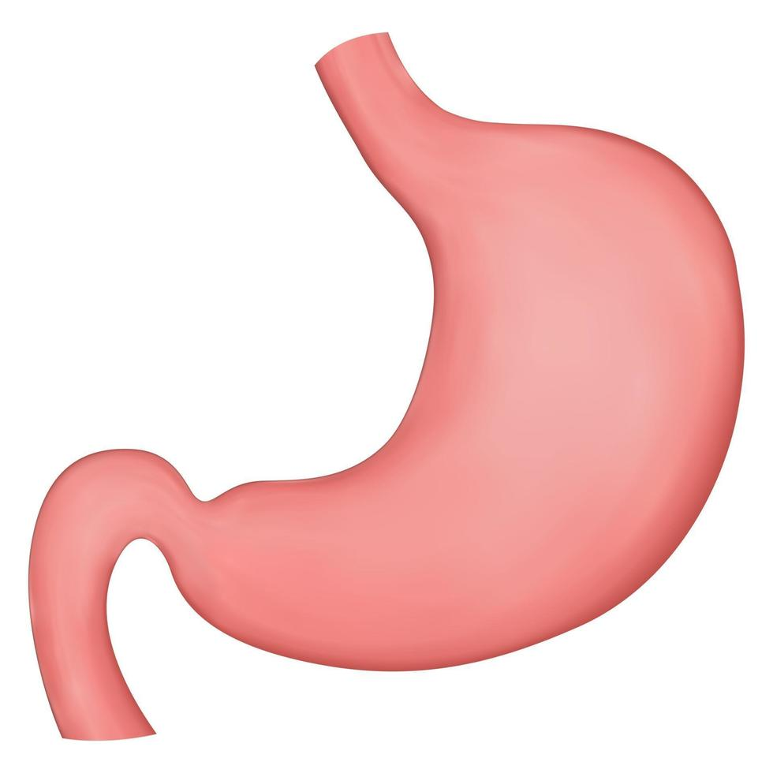
 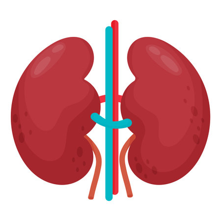
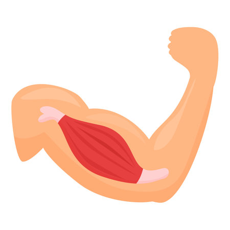
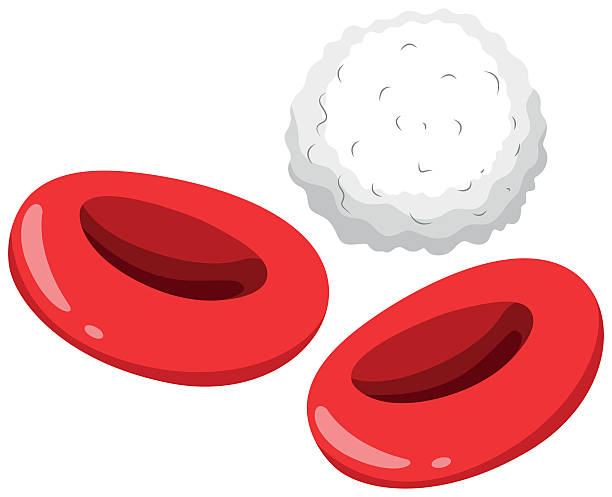
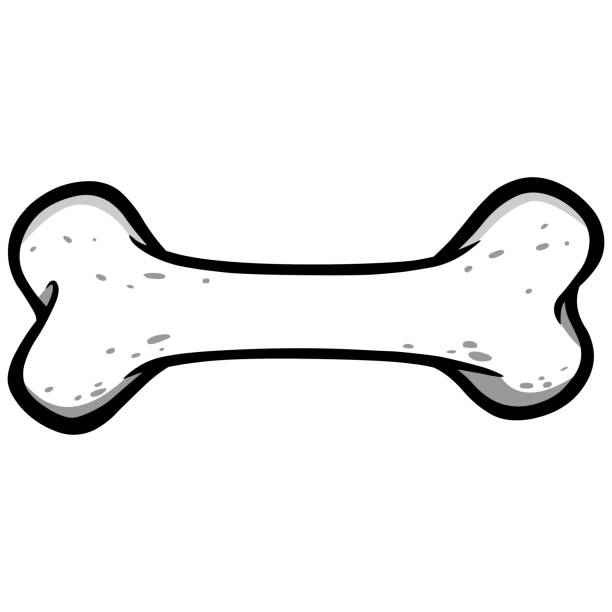
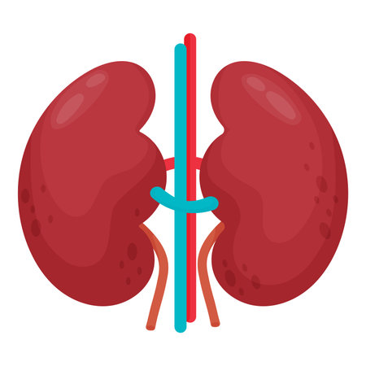
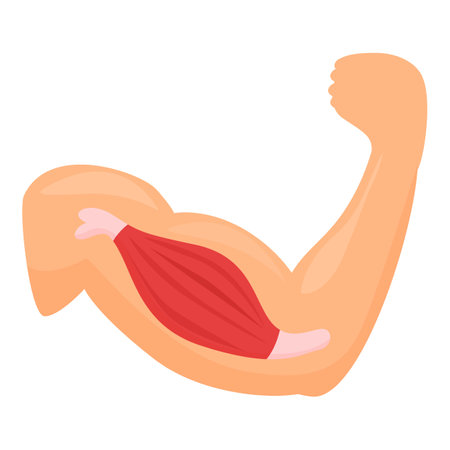
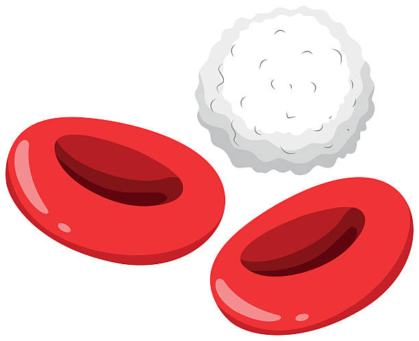
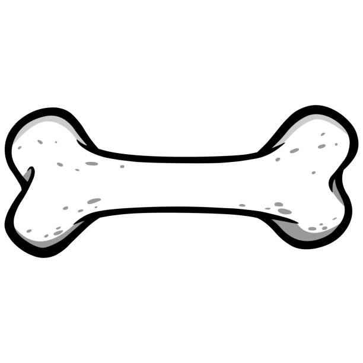
Podcast
Envie d'en savoir plus ? Découvrez les podcasts pour tout savoir sur Race For Water.
À propos de la pollution
Regardez la conséquence de la pollution sur les océans et comment cela affecte la santé humaine.
Voir